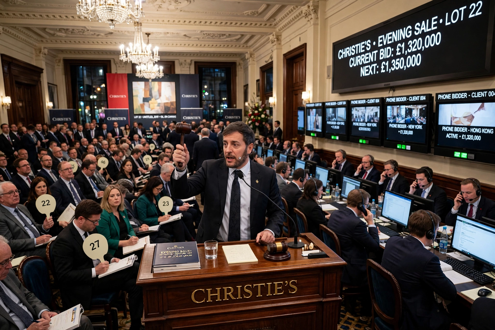

Christie's
Christie's is a British auction house founded in 1766 by James Christie. Together with its rival Sotheby's, it dominates the international market for fine and decorative art, jewellery, wine and collectibles, with salerooms in London, New York, Paris, Geneva, Hong Kong and elsewhere. Since 1998 it has been owned by Groupe Artémis, the holding company of French businessman François Pinault.

| Christie's | |
|---|---|
| Founded | 5 December 1766, London |
| Founder | James Christie |
| Headquarters | King Street, St James's, London |
| Owner | Groupe Artémis (François Pinault) |
| Industry | Fine art and luxury auctions |
History
James Christie held his first sale on 5 December 1766 in Pall Mall, London, and built the firm on sales of aristocratic estates and Old Master paintings. The house moved to King Street, St James's, in 1823, where its flagship remains. In the twentieth century Christie's expanded internationally — New York (1977), Geneva, Hong Kong — and in 1973 became a public company before being taken private by Pinault in 1998. In 2000, Christie's and Sotheby's were implicated in a price-fixing scandal over commissions; Christie's former chairman was convicted in the United States.
Record sales
Christie's has sold many of the most expensive artworks ever auctioned. Leonardo da Vinci's Salvator Mundi sold at Christie's New York in November 2017 for $450.3 million including premium, the highest price ever paid for a work of art at auction. In March 2021 the house sold Beeple's NFT Everydays: The First 5000 Days for $69.3 million, a landmark for digital art. In November 2022 the collection of Microsoft co-founder Paul Allen achieved $1.5 billion, the largest auction total for a single-owner sale.
Operations
Christie's holds several hundred sales a year across some 80 categories, from Old Masters and Impressionist art to handbags and sneakers, and has grown its online-only and private-sales business. Its principal rival remains Sotheby's; the two together account for the great majority of the high-end art auction market.
See also
Recreated from memory as part of the muse-webcrawl project.